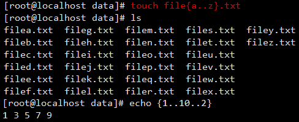
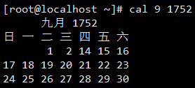
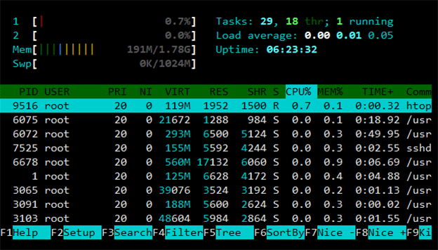
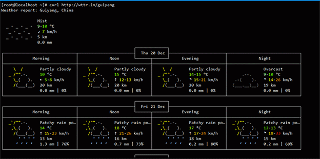
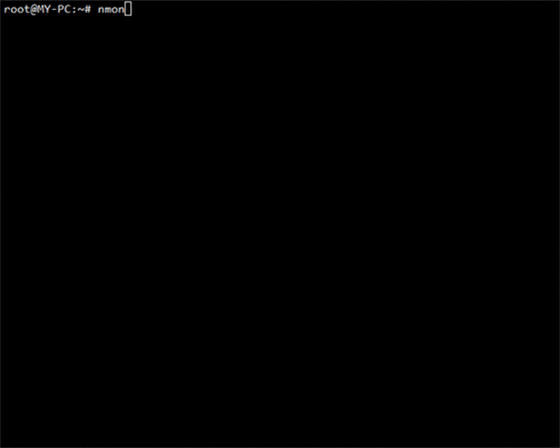
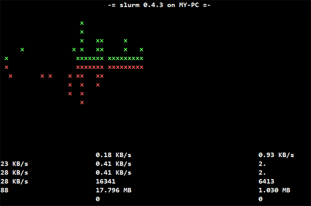

Linux Change Our Life!
| 系统管理 | 文件管理 | 磁盘管理 | 用户管理 | 网络管理 | 实用工具 |
Linux笔记
系统管理
- shutdown 电源管理
- halt|poweroff 关机
- reboot 重启
- $(cmd) | `cmd` 将一个命令的输出打印到另一个命令参数[echo "I am `whoami`"]
-
{...} 重复打印字符串的简化形式[touch file{1,2,3}.txt | echo {1..10..2}: 以2为步数打印1至10]

- whereis 寻找命令的二进制文件、源文件、手册页
- which 显示命令真实路径
- whatis 显示目录手册页描述信息
- man 查找命令帮助信息
- runlevel 显示用户运行级别[init 更改运行级别]
- ldd 列出运行文件动态库依赖关系
- hexdump 显示文件的16进制格式
- enable 启动|关闭shell内置命令[-n 显示所有已禁用的命令][help 可查看已经被关闭的内置命令[名称旁边的星号 (*) 意味着该命令被禁用]]
- $PS1 默认提示符[$PS1="\[\e[1;32m\][\u@\h \W]\\$\e[0m\]"——设置颜色]
- locale 显示当前地区的语言
-
echo [-E (默认)不支持\解释功能][-n 不自动换行][-e 启动\字符的解释功能——echo -e "\a" 响铃]
- hwclock 显示硬件[主板]时间
- date 管理系统时间
-
cal|ncal 显示日期

- yes 重复输出字符串
- ps -aux 查看系统进程
- top 即时查看系统进程
-
htop 交互式进程查看

- kill 终止进程
- vmstat 查看虚拟内存状况
- hash 命令缓存表
- mpstat 报告处理器相关统计
- uptime 显示系统运行了多久
- uname -a 打印系统信息[/proc/version]
- hostname 显示主机名
- type 显示命令属性[内部命令|外部命令]
- crontab 创建定时任务
文件管理
- cd 切换目录
- mv 移动|重命名文件
- cp 复制文件
- ls | ll 查看当前目录下的文件及子目录
- fdisk -l 查看磁盘信息
- agedu -s / [分区或文件夹] 查看文件详细占用情况
- [agedu -w显示相关信息网页页面]
- [--address 192.168.1.65:8099 指定IP和端口]
- [ --auth none|basic 授权权限[none表示无权限 | basic随机生成密码] ]
- mkdir 新建文件夹
- rm -rf 删除文件[夹][创建名为'-*'的文件，只需将文件路径写全即可——'touch /opt/-a' | 删除文件也是如此 '——rm -rf /opt/-a']
- cat 显示文件内容
- tac 反向[从最后一行倒序]显示文件内容
- nl 显示行号
- wc 显示文件的统计信息
- uniq 对文本内容进行统计[显示字符的重复次数]
- sort 对文件进行排序
- more 根据窗口大小，一页一页的显示文件内容
- less 和more类似，但其优点可以往前翻页，而且进行可以搜索字符
- tail | head 只显示文件最后|开始几行
- find 在目录层次结构中搜索文件
- file 确定文件类型
- crontab 创建定时任务
- cmd;cmd;cmd 同时运行多个命令
- \ 命令换行符[若命令过长，可换行输入]
- lspci [-vvn] 显示系统中所有PCI总线设备或连接到该总线上的所有设备
- lshw 显示所有硬件摘要信息
- lsscsi 查看SCSI控制器设备的信息【// lscpu lsusb】
- lsblk 查看块设备信息【sdb-U盘 sda-硬盘驱动器】
- blkid 查看块设备属性
- iostat 检测整个CPU与接口设备的输入/输出状态【- CPU 平均负载和磁盘活动】
- lsmod 列出系统所用模块 [利用modinfo+module.name查看模块详情]
- dmesg 显示内核缓冲信息
磁盘管理
- df [df -h] 查看系统磁盘空间使用情况
- du -sh 查看目录空间占用情况
- free -m 查看系统内存使用情况
- du -sh file|directory 查看文件或目录的占用情况
- fdisk [-l 显示已挂载的磁盘] 操作磁盘分区
- mount 显示挂载的文件系统
- iotop 磁盘I/O 监控
用户管理
- su 切换用户['su -'|'su root'[进入用户家目录|保持当前目录]切换为root用户]
- sudo 提升普通用户的权限
- visudo [更改/etc/sudoers ==> 'user ALL=(ALL) ALL ']为普通用户增加sudo权限
- getent passwd 显示所有用户列表[/etc/passwd]
- usermod 修改用户权限
- useradd 新建用户
- userdel 删除用户
- chage [-l 显示用户密码过期信息] 更改用户密码过期信息
- passwd 更改用户密码[-l|u 锁定[即禁止其登录]|解锁用户][]
- last 显示最近用户登良路信息
- lastlog 显示每个用户的最近一次登录信息[/var/log/lastlog]
- logname 当前登录用户
- 'who am i'|'whoami' 查看当前用户
- who | w 查看当前时间的所有登录用户
- id 打印用户真实信息
- tty 显示当前所属终端
- chvt 更改所在终端
网络管理
- ifconfig 查看网络信息[需安装'net-tools'|'ip address']
- netsat [-antlp] 查看连接网络信息
- nmtui 可视化控制工具[*CentOS]
- nmcli 命令行网络管理工具[*CentOS]
- ssh user_name@host #ssh连接远程主机
- scp [源文件] [目标地址] [【scp -P 36073 nginx-1.14.0.tar.gz root@107.182.22.249:/home】 使用ssh协议在两台主机之间传送文件
- nethogs 即时流量查看
- systemctl 系统服务管理
- pidstat 报告Linux任务的统计数据
实用工具
-
curl http://wttr.in 【curl wttr.in/Guangzhou可选择地名】获取当前位置的天气预报信息

-
bc 终端计算器

-
nmon Linux资源查看器

-
slurm -i ens33 即时网络查看

-
ncdu 内存资源查看器